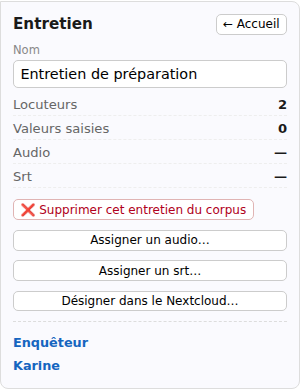

Gérer les entretiens et leurs médias
La vue Corpus permet de retrouver les entretiens, de les renommer, de choisir leur enregistrement et de les supprimer. Cette page décrit ces gestes dans un corpus local.
Dans Importer et traiter, ouvrez l’onglet Accueil, représenté par une maison. Si vous êtes dans un entretien, cliquez d’abord sur Corpus dans le fil de navigation du haut.
Sélectionner ou ouvrir un entretien
Un clic sur une carte d’entretien affiche sa fiche à gauche : son nom, ses locuteurs, ses données et les fichiers associés. Un second clic sur la même carte referme cette sélection.
Pour lire ou modifier la transcription, cliquez sur le crayon de la carte. Sélectionner la carte et ouvrir son entretien sont donc deux gestes différents.

Renommer un entretien
- Cliquez sur sa carte pour afficher sa fiche.
- Modifiez le champ Nom.
- Cliquez hors du champ pour valider le changement.
Le nouveau nom apparaît sur la carte. Les fichiers de transcription et d’enregistrement d’origine ne sont pas renommés.
Trier les entretiens
À partir de deux entretiens, ouvrez Entretiens → Trier les entretiens dans la barre de menus. Vous pouvez choisir :
- Par ordre alphabétique : selon les noms affichés.
- Par ordre d’ajout : selon leur arrivée dans le corpus.
- Par date de modification : les entretiens modifiés récemment en premier.
- Par longueur : les transcriptions contenant le plus de mots en premier.
Le tri change l’ordre des cartes, pas le contenu des entretiens. La longueur correspond au texte, pas à la durée de l’enregistrement.
Ajouter, remplacer ou détacher un enregistrement
Dans la fiche de l’entretien :
- Assigner un audio… permet de choisir un enregistrement lorsqu’aucun n’est associé.
- Remplacer l’audio… choisit un autre fichier à écouter avec cette transcription.
- Effacer l’audio retire son association à l’entretien.
Ces commandes permettent aussi de choisir une vidéo. L’enregistrement est référencé à son emplacement, sans être copié dans le corpus.
Effacer l’audio ne supprime pas le fichier de votre ordinateur. Le texte de l’entretien reste dans le corpus. Remplacer l’enregistrement ne remplace pas non plus la transcription.
Après un remplacement, vérifiez que le bon enregistrement est lu et que ses repères de temps correspondent toujours au texte.
Retrouver un fichier déplacé
Si un enregistrement a été déplacé ou renommé sur votre ordinateur, SonalPi peut signaler qu’il est introuvable. La transcription reste disponible.
- Ouvrez l’entretien avec son crayon.
- Dans le message du lecteur, cliquez sur Assigner un audio….
- Désignez le fichier à son nouvel emplacement.
Vous pouvez aussi revenir à la fiche de l’entretien et utiliser Remplacer l’audio…. Vérifiez ensuite la lecture.
Associer des sous-titres à un entretien existant
Si vous avez commencé avec un enregistrement seul ou des notes, le bouton Assigner un srt… peut apparaître dans la fiche. Il permet de choisir une transcription SRT ou VTT pour ce même entretien.
Si l’entretien contient déjà du texte, une confirmation vous demande de choisir Remplacer le contenu ou Annuler, avant de sélectionner le fichier.
Cette opération remplace la transcription et les éléments attachés à son texte : codages, commentaires et pseudonymisations appliquées. Ce n’est pas un ajout à la suite du texte. Les notes de l’entretien et son enregistrement associé sont conservés. Vérifiez votre choix avant de remplacer un texte déjà travaillé.
Pour créer un autre entretien plutôt que remplacer le texte de celui-ci, utilisez Ajouter un entretien.
Supprimer un entretien du corpus
- Sélectionnez sa carte, puis cliquez sur Supprimer cet entretien du corpus dans sa fiche.
- Lisez le bilan. Il indique aussi les conséquences éventuelles sur les cas ou les recueils qui utilisent cet entretien.
- Cliquez sur Annuler pour conserver l’entretien, ou sur Supprimer pour confirmer.
Après confirmation, la carte disparaît et les fichiers internes de l’entretien sont archivés dans le dossier corbeille/ du corpus. Les fichiers d’enregistrement d’origine ne sont pas supprimés.
La suppression ne se rétablit pas avec la commande Annuler du menu Édition. Ne l’utilisez pas simplement pour masquer un entretien ou détacher son audio.